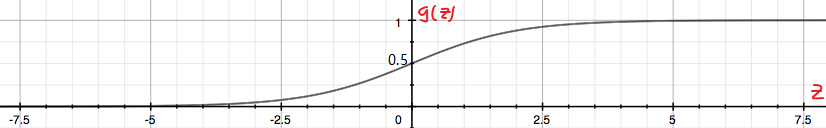

三. 逻辑回归
参考链接: https://scruel.gitee.io/ml-andrewng-notes/week3.html
1、分类问题
参考视频: 6 - 1 - Classification (8 min).mkv
下面我们开始讨论分类问题。在分类问题中, 你要预测的变量 \(y\) 是离散的值, 我们将学习一种叫做逻辑回归 (Logistic Regression) 的算法, 这是目前最流行使用最广泛的一种学习算法。所以说逻辑回归是解决分类问题。
在分类问题中, 我们尝试预测的是结果是否属于某一个类（例如正确或错误）。分类问题的例子有: 判断一封电子邮件是否是垃圾邮件; 判断一次金融交易是否是欺诈; 之前我们也谈到了肿瘤分类问题的例子, 区别一个肿瘤是恶性的还是良性的。
我们现在要从只包含两类0和1的二分类开始, 后面我们将讨论多分类问题, 例如变量y可以取 0, 1, 2, 3 这几个值。我们将因变量 (dependent variable) 可能属于的两个类分别称为负向类 (negative class) 和正向类 (positive class) ,则因变量, 其中 0 表示负向类, 1 表示正向类。
我们如何开发一个分类算法?
这个例子中的训练集是对肿瘤进行恶性和良性分类得到的数据, 注意到恶性与否只有两个值, 0 (No) 以及 1 (Yes)。所以对于这个训练集, 我们可以做的是把我们已经学会的线性回归算法应用到这个数据集: 用直线对数据进行拟合。

如果我们想做出预测，我们可以设置分类器的阈值为0.5, 即纵坐标为0.5。
- 如果假设函数输出一个值 >= 0.5, 则可以预测 y=1
- 如果假设函数输出一个值 < 0.5, 则可以预测 y=0
我们观察结果发现, 纵坐标0.5对应的横坐标右边我们将预测为正, 左边我们将预测为负。
在这个特定的例子中, 线性回归做得很好也很正确。我们尝试改变一下这个问题, 我们将横轴延长一点。假设我们有一个训练样本位于右边远处。

如果我们使用原来绿色的线, 仍然能做完成很好的分类(把右侧最远的点算进去)。但是随着右侧最远处的点加入, 我们运行我们的线性回归算法我们会得到另一条数据的拟合直线(假设变为图中蓝色的线)。我们继续将阈值设为0.5, 我们会发现左右两边的预测结果有问题了。
总结一下就是, 加了最远处的训练集后, 使得线性回归对数据的拟合直线从绿色的线变到了蓝色的线, 从而生成了一个更坏的假设。所以把线性回归模型应用到分类问题，并不是一个好主意。
对于分类问题, \(y\) 取值为 0 或者1，但如果你使用的是线性回归，那么假设函数的输出值可能远大于 1，或者远小于0，即使所有训练样本的标签 \(y\) 都等于 0 或 1。尽管我们知道标签应该取值0 或者1，但是如果算法得到的值远大于1或者远小于0的话，就会感觉很奇怪。所以我们在接下来的要研究的算法就叫做逻辑回归算法，这个算法的性质是：它的输出值永远在0到 1 之间。
顺便说一下，逻辑回归算法是分类算法，我们将它作为分类算法使用。有时候可能因为这个算法的名字中出现了“回归”使你感到困惑，但逻辑回归算法实际上是一种分类算法，它适用于标签取值离散的情况，如：0, 1。
接下来，我们将开始学习逻辑回归算法的细节。
2、假设函数描述
参考视频: 6 - 2 - Hypothesis Representation (7 min).mkv
为了使 \(h_{\theta}(x) \in (0,1)\), 引入逻辑回归模型, 定义假设函数
对比线性回归函数 \(h_\theta(x)=\theta^Tx\), \(g\) 表示逻辑函数 (logistic function), 复合起来, 则成为逻辑回归函数。
逻辑函数是 S 型函数, 会将所有实数映射到(0, 1)范围。
sigmoid 函数 (如下图) 是逻辑函数的特殊情况, 其公式为 \(g(z)=\frac{1}{1+e^{-z}}\)

应用sigmoid 函数, 则逻辑回归模型: \(h_\theta(x)=g(\theta^Tx)=\frac{1}{1+e^{-\theta^Tx}}\)
逻辑回归模型中, \(h_\theta(x)\) 的作用是, 根据输入 \(x\) 以及参数 \(\theta\) , 计算得出 "输出 \(y=1\) " 的可能性(estimated probability), 概率学中表示为:
注意
上面第二个式子是针对我们现在研究的二分类问题而说的, y 的取值只能是0 或 1。所以两者相加的概率为 100% 。
\(P(y=1|x;\theta)\) 的含义: probability that y=1, given x, parameterized by \(\theta\) 。
以肿瘤诊断为例, \(h_\theta(x)=0.7\) 表示病人有 \(70%\) 的概率得了恶性肿瘤。
3、决策边界
参考视频: 6 - 3 - Decision Boundary (15 min).mkv
决策边界的概念, 可帮助我们更好地理解逻辑回归模型的拟合原理。
在逻辑回归中, 有假设函数 \(h_{\theta}(x) = g(z)=g(\theta^Tx)\)。
为了得出分类的结果, 这里和前面一样, 规定以 \(0.5\) 为阈值:
回忆一下sigmoid凸函数的图像 :
观察可得当 \(g(z) \geq 0.5\) 时, 有 \(z \geq 0\), 即 \(\theta^T x \geq 0\)。
sigmoid 函数的公式为 \(g(z)=\frac{1}{1+e^{-z}}\)
同线性回归模型的不同在于：
直观一点 举个栗子,
\(h_\theta(x)=g(\theta_0+\theta_1x_1+\theta_2x_2)\) 是下图模型的假设函数:
根据上面的讨论, 要进行分类, 那么只要 \(\theta_0+\theta_1x+\theta_2x \geq 0\) 时, 就预测 \(y=1\), 即预测为正向类。
如果取 \(\theta = [-3 \ \ 1\ \ 1]^T\) , 则有 \(z=-3+x_1+x_2\),
当 \(z \geq 0\), 即 \(x_1+x_2 \geq 3\)时, 易绘制出图中的品红色直线, 即决策边界, 为正向类 (以红叉标注的数据) 给出 \(y=1\) 的分类预测结果。
上面讨论了逻辑回归模型中线性拟合的例子, 下面则是一个多项式拟合的例子, 和线性回归中的情况也是类似的。
为了拟合下图数据, 建模多项式假设函数:
这里取 \(\theta = [-1\ \ 0\ \ 0\ \ 1\ \ 1]^T\), 决策边界对应了一个在原点处的单位元 (\(x_1^2+x_2^2=1\)), 如此便可给出分类结果, 如图中品红色曲线:
当然, 通过一些更为复杂的多项式, 还能拟合那些图像显得非常怪异的数据, 使得决策边界形状似碗装、爱心状等等。
简单来说, 决策的边界就是分类的分界线, 分类现在实际就由 \(z\) (中的 \(\theta\) ) 决定啦。
4、代价函数
参考视频: 6 - 4 - Cost Function (11 min).mkv
那我们怎么知道决策边界时啥样? \(\theta\) 多少时能很好的拟合数据? 当然, 见招拆招, 总要来个 \(J(\theta)\)。
如果直接套用线性回归的代价函数:
其中, \(h_\theta(x)=g(\theta^Tx)\), 可绘制关于 \(J(\theta)\) 的图像, 如下图

回忆线性回归中的平方损失函数, 其实是一个二次凸函数 (碗状) , 二次凸函数的重要性质是只有一个局部最小点即全局最小点。上图中有许多局部最小点, 这样使得梯度下降算法无法确定哪个收敛点是全局最优。
如果此处的代价函数也是一个凸函数, 是否也有同样的性质, 从而最优化? 这类讨论凸函数最优值得问题, 被称为凸优化问题 (Convex optimization)。
当然, 损失函数不止平方损失函数一种。
对于逻辑回归, 更换平方损失函数为对数损失函数, 可由统计学中的最大似然估计方法推导出代价函数 \(J(\theta)\) (下一节英文版中给出具体的推导过程):
则关于 \(J(\theta)\) 的图像如下:

如左上图, 当训练集的结果为 \(y=1\) (正样本) 时, 随着假设函数趋向于1, 代价函数的值会趋向于0, 即意味着拟合程度很好。如果假设函数此时趋于0, 则会给出一个很高的代价, 拟合程度差, 算法会根据其迅速纠正 \(\theta\) 值, 右图 \(y=0\) 同理。
区别于平方损失函数, 对数损失函数也是一个凸函数, 他没有局部最优值, 只有全局最优值。
5、Logistic regression
里面包含: 代价函数和梯度的推导。(u1s1, 英文版真的写得很好)
Let's now talk about the classification problem. This is just like the regression problem, except that the values \(y\) we now want to predict take on only a small number of discrete values. For now, we will focus on the binary classification problem in which \(y\) can take on only two values, 0 and 1. (Most of what we say here will also generalize to the multiple-class case.) For instance, if we are trying to build a spam classifier for email, then \(x^{(i)}\) may be some features of a piece of emial, and \(y\) may be 1 if it is a piece of spam mail, and 0 otherwise. O is also called the negative class, and 1 the positive class, and they are sometimes also denoted by the symbols "-" and "+". Given \(x^{(i)}\), the corresponding \(y^{(i)}\) is also called the label for the training example.
We could approach the classification problem ignoring the fact that \(y\) is discrete-valued, and use our linear regression algorithm to try to predict \(y\) given \(x\). However, it is easy to construct examples where this method performs very poorly. Intuitively, it also doesn't make sense for \(h_\theta(x)\) to take values larger than 1 or smaller than 0 when we know that \(y \in \{0, 1\}\).
To fix this, let's change the form for our hypotheses \(h_\theta(x)\). We will choose
where
is called the logistic function or the sigmoid function. Here is a plot showing \(g(z)\) :

Notice that \(g(z)\) tends towards 1 as \(z \rightarrow + \infty\), and \(g(z)\) tends towards 0 as \(z \rightarrow - \infty\). Moreover, \(g(z)\), and hence also \(h(x)\), is always bounded between 0 and 1. As before, we are keeping the convention of letting \(x_0=1\), so that \(\theta^Tx=\theta_0+\sum_{j=1}^n \theta_jx_j\).
For now, let's take the choice of \(g\) as given. Other function that smoothly increase from 0 to 1 can also be used, but for a couple of reasons that we'll see later, the choice of the logistic function is a fairly natural one. Before moving on, here's a useful property of the derivative of the sigmoid function, which we write a \(g'\):
So, given the logistic regression model, how do we fit \(\theta\) for it? Following how we saw least squares regression could be derived as the maximum likelihood estimator under a set of assumptions, let's endow our classification model with a set of probabilistic assumptions, and then fit the parameters via maximum likehood.
Let us assume that
Notice that this can written more compactly as
Assuming that the \(m\) training examples were generated independently, we can then write down the likelihood of the parameters as
As before, it will be easier to maximize the log likelihood:
其实到了这里, 因为最大似然估计是求使 \(l(\theta)\) 取最大值时的 \(\theta\), 其实原文到了这里是是用了梯度上升法求解, 求得的 \(\theta\) 就是我们要求的最佳参数。
但是为了跟前一节的中文课程统一, 我们还是用梯度下降来做, 这里我们做一个转换。因为 \(l(\theta)\) 要求最大等价于 \(-\frac{1}{m}l(\theta)\) 取最小。所以, 我们可以令：
因为求梯度要求 \(\frac{\partial }{\partial \theta_j}J(\theta)\), 所以这里顺便推导一下。老套路, 为了简化, 先假设训练集只有一个。
Let's start by working with just one training example \((x, y)\)。
所以
其中, \(m=1\)。
这个是不是很熟悉, 这个梯度其实跟线性回归模型中的梯度完全一样。
6、代价函数简化和梯度下降
参考视频: 6 - 5 - Simplified Cost Function and Gradient Descent (10 min).mkv
7、进阶优化
参考视频: 6 - 6 - Advanced Optimization (14 min).mkv
8、多类别分类: 一对多
参考视频: 6 - 7 - Multiclass Classification_ One-vs-all (6 min).mkv